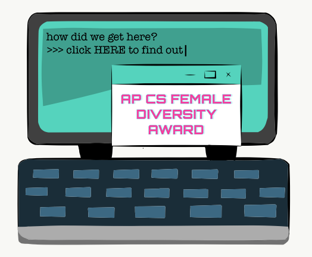

Gender Disparity
This topic holds close to my heart not only because of the gender disparity I have so blatantly seen in my own computer science classrooms and internships, but also because of the nostalgia felt while writing about this topic given that it is the subject upon which I wrote my very first article.
Waiting for the world to wake up (Opinion)
This is the first article that I have ever written. Covering double standards in societal dress-codes, I was inspired to write this story after being reprimanded by a teacher for wearing a long-sleeved cold-shoulder turtleneck sweater. It is also with this article that I first realized the power journalism holds in giving me a space to address my thoughts.
Click here to read the story.
Dream a little dream (Opinion)
After attending HackTJ–my high school’s hackathon–and being one of the only all-girl teams to win a prize among the sea of all-boy or mixed-gender team winners, I felt the need to bring up this finding.
Click here to read the story.
Jefferson receives “AP Computer Science Female Diversity Award” (News)
After speaking with a data journalist at The New York Times and learning about DataWrapper, I set off to learn how to use the software on my own. This is the first article I constructed using DataWrapper. For this in-depth news article, I conducted five interviews, one of which was over email. The interviews below are listed in the following order: 2021 NCWIT Award for Aspirations in Computing recipient and Jefferson senior Eban Ebssa (34 minutes), Coding Lady Colonials president and Jefferson senior Amber Garcha (28 minutes), Jefferson computer science teacher and Jefferson teacher of the year Mr. Dan Tra (105 minutes), and former Jefferson computer science teacher Ms. Ria Galanos (80 minutes). As highlighted in the last soundbite below, at the end of each interview, I always ask my interviewee whether they have anything else to add, prompting them to think of more information that may be important to the article. I also drew the featured image using Adobe Draw and Adobe Illustrator. Throughout this article I link evidence and resources as well as place emphasis on word-choice. To be more inclusive of transgenders, I use words such as “girls” or “women” in place of "female".
Click here view the spreadsheet of data.
Click here to read the story.
Girl Genius Magazine writer
Girl Genius Magazine is a student-run nonprofit aiming to empower women in STEAM. I joined the writing team because as a woman in computer science myself, I am passionate about encouraging women in STEAM. As a part of the writing team, I have written articles for their newsmagazines and their Medium blog, as well as created content for their LinkedIn.
The article I wrote for their blog utilizes data to compare the differences between generations, and deeply dives into data analysis in the text itself.
Click here to view the spreadsheet of data.
Click here to read the story.